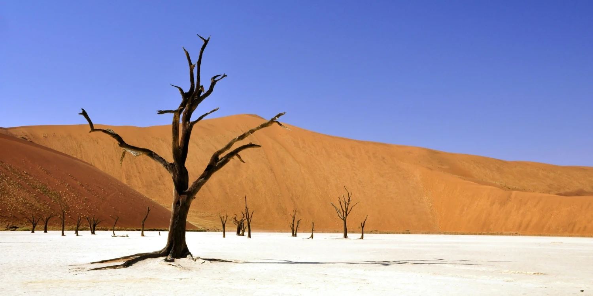

Data
Area: 825,615 km²
Population: ~2.5 million
Capital: Windhoek
Language: English
currency: Namibian Dollar (NAD)
Time Zone: UTC+2
Calling Code: +264
Internet TLD: .na
Weather
Temperature: 25°C
Conditions: Sunny
Wind: 10 km/h
Wind chill: 17.6°C